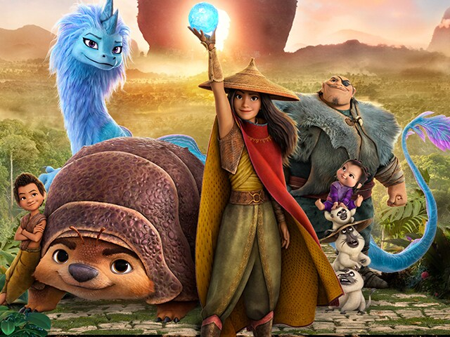
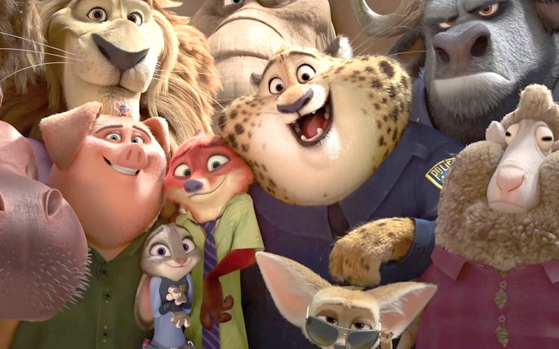
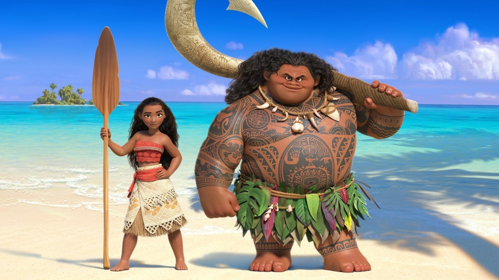
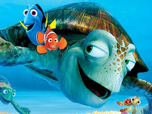
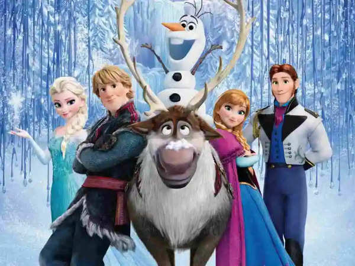

Raya and the Last Dragon is a 2021 Disney animated fantasy film that takes place in the mythical land of Kumandra, a once-thriving kingdom now divided into five warring regions. The story follows Raya, a brave and skilled warrior princess, who embarks on an epic journey to find the legendary last dragon, Sisu, in order to unite the fractured lands and restore peace. 500 years ago, dragons sacrificed themselves to save humanity from a monstrous force known as the Druun, but the Druun have returned, and it's up to Raya to stop them. Along her quest, she forms unlikely friendships with various characters from different tribes, each with their own unique skills and motivations. The film blends stunning visuals, intense action, heartfelt themes of trust and unity, and humor.

Zootopia is a 2016 Disney animated film set in the bustling metropolis of Zootopia, a city where anthropomorphic animals, both predators and prey, live together in harmony. The story follows Judy Hopps, an optimistic and determined rabbit who becomes the first rabbit police officer in Zootopia. Despite facing skepticism and prejudice from her larger colleagues, Judy is eager to prove herself. When a mysterious case involving the disappearance of several predator animals arises, Judy teams up with a cunning, street-smart fox named Nick Wilde. Together, they unravel a larger conspiracy that threatens the peace between predators and prey in the city. As they navigate the complexities of Zootopia's diverse districts and its residents, Judy and Nick uncover secrets that challenge .

Moana is a 2016 Disney animated film that tells the story of a spirited young girl named Moana, the daughter of the chief of the Polynesian island of Motunui. Chosen by the ocean itself, Moana embarks on a daring journey to save her people when a life-threatening curse brought on by the demigod Maui begins to affect her island. Moana sets sail beyond the reef to find Maui, who stole the heart of Te Fiti, a goddess who brought life to the islands. The theft has caused a destructive force to spread across the ocean, endangering all life. Reluctantly, Maui agrees to help Moana return the heart, and together they face enormous challenges, including treacherous seas, deadly creatures, and Maui’s own doubts.

Finding Nemo is a 2003 Pixar animated film that follows the journey of a clownfish named Marlin as he searches for his son, Nemo, who has been captured by a diver and placed in a fish tank in a dentist’s office in Sydney, Australia. Overprotective and anxious, Marlin has always been cautious with Nemo due to a tragic event where he lost his wife and most of their eggs to a predator. Despite Marlin’s fears, Nemo, eager for independence, ventures beyond the safety of their coral reef home, leading to his capture. Determined to find his son, Marlin embarks on an epic journey across the ocean. Along the way, he meets Dory, a forgetful yet optimistic blue tang fish, who becomes his loyal companion. Together, they face various challenges, including encounters with sharks, jellyfish, and sea turtles.


Frozen is a 2013 Disney animated film that tells the story of two sisters, Elsa and Anna, princesses of the kingdom of Arendelle. Elsa, the older sister, has magical powers that allow her to create ice and snow, but she struggles to control them. After accidentally injuring Anna with her powers as children, Elsa isolates herself from her sister to keep her powers hidden and prevent further harm. On the day of Elsa’s coronation as queen, her powers are unintentionally revealed, plunging Arendelle into eternal winter. Panicked, Elsa flees to the mountains and creates an ice palace where she can live in solitude, free from fear of hurting others. Determined to bring her sister back and restore summer, Anna sets off on a journey to find Elsa.